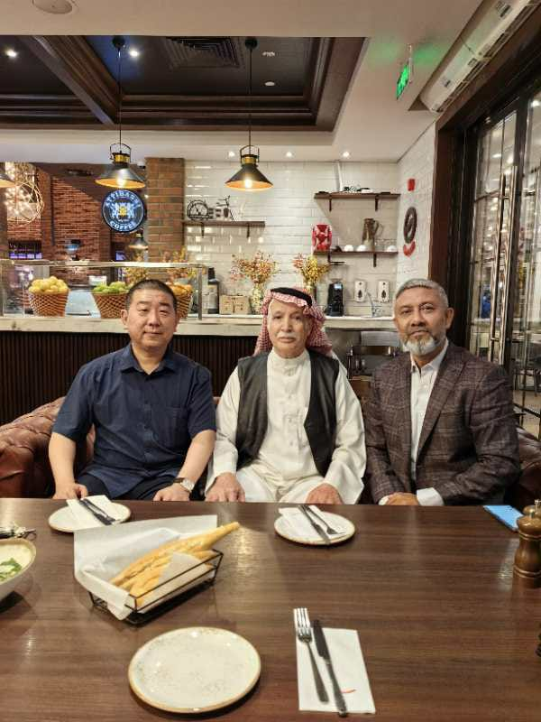
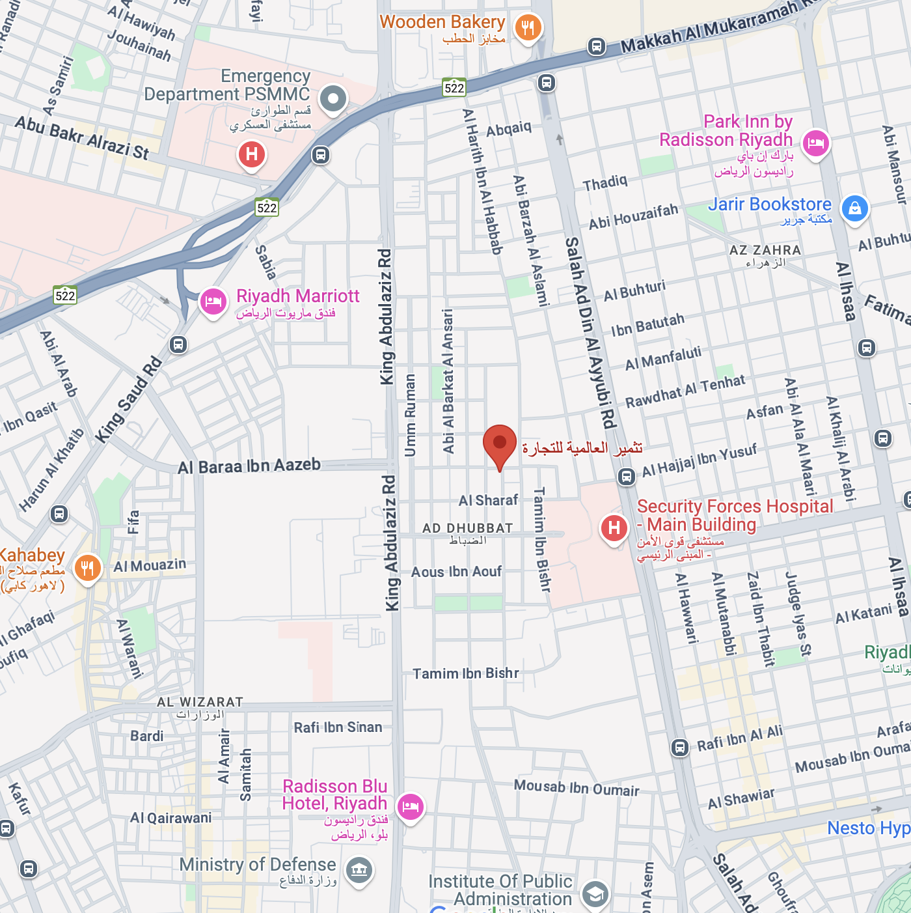

Fabric & Textile Expertise
Over four decades as a "house of expertise" in fabrics, materials, and sewing techniques — guaranteeing premium standards in every garment we deliver.
Tathmeer International is a premier Saudi exporter and importer of high-quality scout clothing, military uniforms, and camping supplies. Founded in the 1980s in Riyadh by Dr. Abdullah Alshebel, the company has built an unmatched reputation over four decades of expertise in fabrics, textiles, and precision sewing techniques.
Serving both public and private sectors — including government ministries and military institutions — Tathmeer International has grown into a trusted name across regional and international markets, renowned for quality, reliability, and custom-fit solutions.
Tathmeer International was founded in Riyadh, initially importing scout and military clothing for the Saudi public sector. From the outset, quality and reliability set the company apart.
Recognizing the rising demand for outdoor recreational products, Tathmeer expanded its portfolio to include comprehensive camping supplies, tapping into a fast-growing regional market.
Success in the public sector opened doors to private-sector clients. The company diversified its customer base and deepened partnerships with leading Asian manufacturers in China, Bangladesh, Vietnam, and Pakistan.
Tathmeer International is completing its own clothing factory, marking a major milestone in the company's evolution — enabling greater production control, faster delivery times, and enhanced capacity to serve local and international markets.

Dr. Abdullah Alshebel, the founder of Tathmeer International, was born in Hail, Saudi Arabia, and completed his early education in Al-Qassim before pursuing advanced academic studies in the United States. He holds a Bachelor of Science from Kent State University (Ohio), a Master's in Mathematics from the University of Denver, and a Doctorate in Mathematics Education from the University of Northern Colorado.
Upon returning to Saudi Arabia, Dr. Alshebel taught at the King Abdul-Aziz Military Academy under the Ministry of Defense and at Teachers' Colleges within the Ministry of Education. His entrepreneurial path began with importing camping equipment, which organically evolved into a specialized enterprise in scout supplies and military clothing — ultimately becoming the Ministry of Education's approved scout supply provider.
With over 37 years of deep expertise in fabrics and textiles, Dr. Al-Shebel has cultivated strong sourcing relationships with leading manufacturers across China, India, Bangladesh, and Pakistan. Beyond business, he remains actively committed to humanitarian and non-profit initiatives, ensuring Tathmeer International reflects his enduring values of quality, integrity, and community service.
Over four decades as a "house of expertise" in fabrics, materials, and sewing techniques — guaranteeing premium standards in every garment we deliver.
Strategic partnerships with major factories in China, Bangladesh, Vietnam, and Pakistan, supplemented by trusted local Saudi suppliers for seamless, reliable supply chains.
From military-grade uniforms to specialized outdoor gear, we engineer tailored products to exact client specifications — durable, fit-for-purpose, and built to last.
Official approved supplier to Saudi government ministries including the Ministry of Education, serving as a benchmark for reliability and compliance in the public sector.
Purpose-built, durable uniforms designed for scout activities, meeting the standards required by the Ministry of Education.
High-performance tactical clothing engineered to satisfy the exacting requirements of military personnel across diverse operational environments.
A comprehensive range of outdoor gear — tents, backpacks, sleeping bags, and essential camp equipment — for individual and institutional clients.
Bespoke clothing solutions in client-specified shapes, fabrics, and quantities — from concept and sampling through to final bulk delivery.
With its new clothing factory in the final stages of completion, Tathmeer International is poised for a significant expansion of its production capabilities. The facility will manufacture high-quality garments for both local and international markets, strengthening the company's competitive position and significantly reducing lead times for clients.
In parallel, the company is exploring new product lines in the outdoor adventure and tactical gear sectors, building on its established strength in camping supplies and military clothing to serve a broader, growing clientele.
Over 40 years of hands-on knowledge in the clothing and textile industry provides unparalleled insight into materials, sourcing, and manufacturing.
From fabric selection through to the final stitch, every product undergoes rigorous quality standards that have earned the trust of governments and institutions.
Deep partnerships across Asia and established local connections in Saudi Arabia translate directly into better pricing, faster delivery, and supply chain resilience.
We go beyond standard catalogue offerings — every client receives solutions built precisely to their specifications, from fabric choice to finished garment.
Badr Al Mazni, Ad Dhubbat, Riyadh 11250, Saudi Arabia
